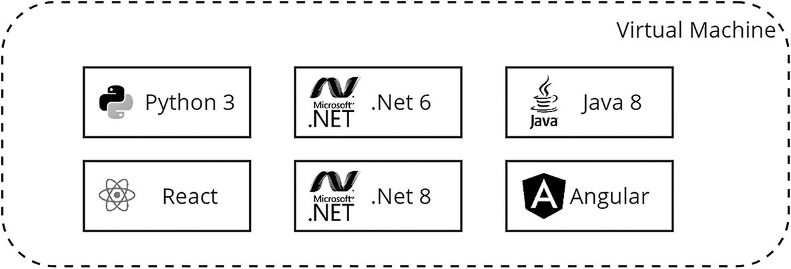
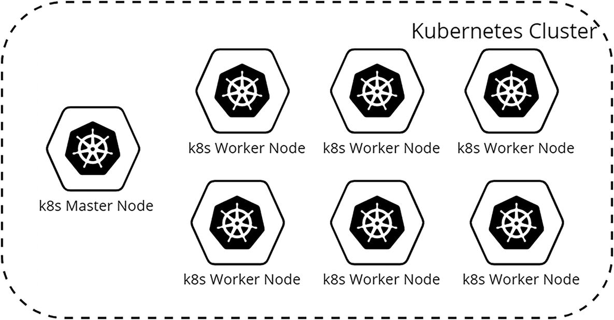

9. Approaches to Final Implementation
© The Author(s), under exclusive license to APress Media, LLC, part of Springer Nature 2024
V. DolzhenkoAlgorithmic Trading Systems and Strategies: A New Approachhttps://doi.org/10.1007/979-8-8688-0357-4_9
9. Approaches to Final Implementation
Viktoria Dolzhenko1
(1)
San Jose, Costa Rica
In previous chapters, I described in detail how to create the main blocks of a trading system. I provided a large amount of information to improve and build a trading system, right down to the architectural solution. There is another important aspect that has never been sufficiently explored: the infrastructure issues. In this chapter, I will cover how to deploy your services. Of course, this book is not as comprehensive as the documentation of tools discussed, but it will give you resources for further research and show how you can build a fairly complex infrastructure on your home computer.
In this chapter, I would like to provide you with information on how to deploy and run a project using Docker and Kubernetes. I will also tell you how I deploy the infrastructure I need.
Binance Adapter
Before launching the application, you need to create it. In previous chapters, I paid a lot of attention to the internal services of the system, or rather even just the domain layer of it, without details of the interaction between the database and peripheral services.
In this chapter, I will show how to create a working application. Let’s launch an adapter to one of the largest and most popular cryptocurrency exchanges: Binance.
I described in detail the part of the system related to interaction with exchanges in Chapter 4. Here I would like to remind you of the main goals and architectural features of this block.
The following is the main functionality that I included in the block of interaction with exchanges:
-
Possibility of placing orders
-
Possibility of order cancellation
-
Providing information on updating order statuses and executing trade transactions
-
Providing trade data
In this chapter, I show how to implement the last point because it clearly demonstrates how much data you have to deal with.
My goal is to implement an application that connects to Binance to receive small candlestick updates and put this data into a Kafka topic.
Implementation
To implement the application, I created an ASP.NET project. In the Main function, which was added by the only hosted service CollectDataHostedService, I implement the receiving data from Binance, as shown in Listing 9-1. This is also where I configured the logging and controller explorer.
public static void Main(string[] args)
{
var builder = WebApplication.CreateBuilder(args);
builder.Services.AddControllers();
builder.Services.AddEndpointsApiExplorer();
builder.Services.AddHostedService
string logLevel = Environment
.GetEnvironmentVariable("LOG_LEVEL") ?? "Trace";
builder.Services.AddLogging(c =>
{
c.AddConsole()
.SetMinimumLevel(Enum.Parse
});
WebApplication app = builder.Build();
app.MapControllers();
app.Run();
}
Listing 9-1
Main Function
To quickly check the functionality of the application, I added a single controller, HealthCheckController (see Listing 9-2). Here I have implemented two functions: liveness and readiness. I will tell you later why there are two of them and what purposes each of them serves. But for now they just return a response with a status of 200 Success. Please note that when you call the /status/liveness method, you will receive the response “It’s alive!!!” I added this as a simple visual check of the app’s functionality.
[ApiController]
[Route("status")]
public class HealthCheckController: Controller
{
[HttpGet("liveness")]
public ActionResult Liveness()
{
return Ok("It's alive!!!");
}
[HttpGet("readiness")]
public ActionResult Rediness()
{
return Ok();
}
}
Listing 9-2
Status Controller
Listing 9-3 shows the implementation of the constructor for the CollectDataHostedService class. For this I use two popular packages: one for integration with Binance (https://www.nuget.org/packages/Binance.NET) and the other for interaction with Kafka (https://www.nuget.org/packages/Confluent.Kafka). In the constructor, I instantiate the Binance and producer client class for Kafka. The Kafka producer is a Kafka client that writes messages to a topic.
public CollectDataHostedService(
ILogger
{
_logger = logger;
_exchange = "binance";
_symbol = Environment
.GetEnvironmentVariable("SYMBOL")
?? "btcusdt";
_bootstrapServers =
Environment
.GetEnvironmentVariable("KAFKA_BOOTSTRAP_SERVERS")!;
_binanceSocketClient = new BinanceSocketClient();
_producer =
new ProducerBuilder
(new ProducerConfig()
{
BootstrapServers = _bootstrapServers
})
.Build();
}
Listing 9-3
Hosted Service, Part 1
The StartAsync function subscribes to the Binance exchange candle update event. When subscribing, you must pass the message arrival event handler. Listing 9-4 shows an implementation of this; here I log the message with a LogLevel trace and produce to a Kafka topic.
public Task StartAsync(CancellationToken cancellationToken)
{
var klineSubscriptionResult =
_binanceSocketClient.SpotApi.ExchangeData
.SubscribeToKlineUpdatesAsync(
symbol: _symbol,
interval: KlineInterval.OneMinute,
onMessage: HandleDataEvent,
cancellationToken);
return klineSubscriptionResult;
}
public Task StopAsync(CancellationToken cancellationToken)
{
return _binanceSocketClient.UnsubscribeAllAsync();
}
private void HandleDataEvent(DataEvent
{
string KafkaMessage = JsonConvert.SerializeObject(message);
_logger.LogTrace(KafkaMessage);
string topic = $"{_exchange}_{_symbol}";
_producer
.ProduceAsync(
topic,
new Message
{Value = KafkaMessage});
}
Listing 9-4
Hosted Service, Part 2
If you set the KAFKA_BOOTSTRAP_SERVERS environment variable with the current URL to your Kafka server instance and run the application, then in the logs you will see a stream of messages with current information about the minute candles of the BTC_USDT pair.
Docker
In this section, I will expand on Docker. I’ll explain how to create a Docker container based on your application and run it on your computer.
History
Before we begin, I will explain how containerization technology came to be.
Once upon a time, when computers started to connect to networks, companies called providers were involved in developing the infrastructure. For example, if in those days you wanted your project or website to be present on the Internet, then you had to buy or rent an entire server from a provider, which, of course, was not cheap.
There was a big problem with this approach: idle resources. Imagine that you had a news site whose peak load occurred only in the morning hours. Of course, you would have to rent a server designed for peak load. But what would happen the rest of the time? Your server would simply be idle. That is, it would cost money as if your site were constantly experiencing peak load.
The solution to this problem was the development of virtual machine technology, which led to cloud providers. Cloud providers purchased and set up physical servers, and they rent these virtual machines to their clients. Virtualization technology has made it possible to run many independent operating systems on one physical server and allocate the required amount of resources to each of them. Previously, you were forced to rent an entire physical server. Now you can rent the resources of the physical server or servers you need and, if necessary, easily increase these resources.
It was at this time that companies such as Amazon Web Services, DigitalOcean, Google Cloud, Microsoft Azure, and others were created. These companies took care of all the low-level work, such as optimizing physical servers and improving network performance. Thanks to this approach, a separation of application programmers and system administrators occurred. Now you, as a developer, no longer need to understand the intricacies of setting up a network or operating a physical server. Now the programmer can fully concentrate on writing code.
This approach ensured a boom in Internet projects and startups. And as applications grew, so did the complexity. This complexity was expressed not only in the algorithmic or logical complexity of the project but also in infrastructural complexity. Projects began to consist not of one large monolithic service but of many different components, each of which requires its own set of dependencies. For example, two different applications might use two versions of TypeScript. See Figure 9-1.

An architecture of the virtual machine. It comprises Python 3, Dot Net 6, java 8, react, Dot Net 8, and angular programs.
Figure 9-1
Virtual machine
Because of increasing complexity, keeping all applications within a single operating system has become difficult. An obvious idea arose about distributing applications across different virtual machines. This approach works and is used in many companies. But there are two problems with this approach.
The first is the growing complexity. The more virtual machines you have, the more different types of applications you have, and the more difficult it is to support it all. Not to mention, there’s updating or changing the configuration. Added to all this complexity is the difficulty of monitoring all these virtual machines and of deploying different environments. Developers need a development environment, and testers need a test environment. A good practice before releasing a build is to do a final check of a new version in a stage environment, which is as similar as possible to the production environment.
The second problem is that the virtual machine takes up a lot of server resources. Each virtual machine requires its own operating system. When you have dozens of them, this is not so noticeable, but when you have a lot of them, they begin to consume a significant amount of server resources and therefore money.
To solve this problem, containerization technology was invented. Currently, the most popular platform for this is Docker. The point of Docker is that instead of running the application directly on the operating system, it launches a Docker process within which the target application runs. From the operating system’s point of view, such a process looks like just another process; that is, it looks like just another application that does something. And inside each Docker process, each running application thinks that it is unique in the entire operating system with all its dependencies, users, and environment variables.
Docker, unlike a virtual machine, is very lightweight; it only provides security. That is, it ensures that one application cannot access other applications and processes on this system and ensures that the network operates to ensure communication between containers.
Why Is This Needed?
How will this technology be useful for our system? Our trading system is built on the microservices architecture. I described in detail the advantages of this approach in Chapter 4. Here I will highlight the main advantages of this approach, which are scalability and independence.
Scalability is necessary to quickly and easily increase the resources needed for a portion of the system. For example, with an increase in the number of active strategies, we need to increase the resources of the application responsible for processing trading information. At the same time, there is no need to increase the resources for the UI part of the application.
Independence is one of the main reasons to choose a microservices architecture. If problems are identified in one part of the system, the remaining parts will not be affected. Imagine an example when you discovered an error in the integration block with one of the exchanges and you need to update the application to fix this error. In the case of a monolithic architecture, the entire application will restart, which means that all strategies that do not even trade on this exchange will stop working. For me this option is unacceptable.
The presence of a large number of microservices presupposes the presence of a convenient infrastructure. Containerization technology is perfect for this.
The trading system also uses third-party applications for its work, such as Postgres and Kafka. Both of these applications are easier and more convenient to run as containers rather than as processes on your operating system.
In summary, knowledge and understanding of Docker is key to developing the trading system described in this book.
Docker Components
Understanding Docker is built on understanding the basic concepts of it. The entire Docker technology is built on several key concepts.
-
Docker engine. This is the main Docker application. This is also called a platform. This is what ensures the operation of Docker processes and network interactions between them. One easy way to install the Docker engine is to use Docker Desktop. Docker Desktop contains the Docker engine and many other components. Installation distributions can be downloaded from the official Docker website.
-
Docker container. This is a running Docker process on the operating system. This is a running container that runs your application with all its dependencies.
-
Docker image. This is a prototype of a container or an image of it. Based on the Docker image, you can run as many Docker containers as you like. Thanks to Docker image, it is guaranteed that each of the Docker container instances will have the same version of the target application, as well as all dependencies.
-
Dockerfile. This is a file describing how to create a Docker image. That is, this is a manifest thanks to which Docker understands what the future Docker image consists of.
A short algorithm for working with Docker is as follows:
-
1.
You need to install the Docker engine. I use Docker Desktop on my work computer, which contains the Docker engine as one of the components.
-
1.
Create a Docker file describing how the target application will be built as a Docker image.
-
1.
Using the docker build command, create a Docker image.
-
1.
Run the Docker container using the docker run command.
In this chapter we will go through all the steps except the first. Because it is specific to each operating system and is well described in the documentation on the Docker website.
Launching the Application
Before starting a Docker container, you need to create an image of the application. To do this, I created a Docker file in the project directory. This file can be called anything, but it is usually called Dockerfile, with a capital letter and without specifying the file type. Listing 9-5 shows the contents of my Docker file.
To create an image, you first need to do the following:
-
1.
Download all the project dependencies. Our project links to external libraries from NuGet packages. The Docker file runs the dotnet restore command. When this command is executed, .NET searches for dependencies and downloads them.
-
1.
Publish the application. To publish an application, use the dotnet publish command. This compiles the application and publishes the resulting files to the specified directory.
-
1.
Give Docker a command to run the application.
FROM mcr.microsoft.com/dotnet/sdk:8.0 AS builder (1)
WORKDIR /app (2)
COPY . ./ (3)
RUN dotnet restore (4)
RUN dotnet publish --no-restore -c Release -o out (5)
FROM mcr.microsoft.com/dotnet/aspnet:8.0 (6)
WORKDIR /app (7)
COPY --from=builder /app/out . (8)
ENTRYPOINT ["dotnet", "GatewaysApi.Binance.dll"] (9)
Listing 9-5
Dockerfile
Let’s figure out what happens on each line of this file.
-
1.
The FROM statement is executed. This specifies the image with which the application’s build commands will be executed. For my application I am using image dotnet/sdk version 8.0 located on the Microsoft Artifact Registry server.
-
1.
In this step, I execute the WORKDIR instruction. This changes the current directory in the container to the one specified in the instructions.
-
1.
The COPY statement tells Docker to copy files and folders into the container. In our example, it instructs Docker to copy everything from the directory from which the build command is launched to the app directory of the container.
-
1.
Run the dotnet restore command.
-
1.
Execute the dotnet publish command. The -o option instructs Docker to put the final compiled files in the out directory. It turns out that the resulting files will be stored at app/out in the container. The --no-restore option indicates that there is no need to check the dependency packages since we ran the restore command first. -c specifies the name of the build configuration; in our case it is Release. After running this command, the assembly files (all kinds of .dll) will appear in the app/out folder.
-
1.
This is where the second stage of image assembly begins. At this step, the FROM statement already points to the base or parent image of the application. I created an ASP.NET application so I am using the parent image dotnet/aspnet version 8.0.
-
1.
Since a new build step has begun due to the FROM statement, you must again specify the current container directory using the WORKDIR statement.
-
1.
At this stage, all files from the /app/out directory from the previous build stage are copied to the current directory. As a result, the resulting .dll files will be located in the current app directory.
-
1.
The ENTRYPOINT instruction tells Docker which command and with which arguments should be called during container execution. In our case, the dotnet GatewaysApi.Binance.dll command will be called.
The Docker file and applications are ready. Let’s collect the image and launch the container. Before we begin, we need to make sure the Docker engine is working. To do this, you can run the docker -v command; this will give you information about the current Docker version.
Also on the Docker hub registry, this is the place where people or companies publish Docker images. The image hello-world (https://hub.docker.com/_/hello-world) contains a single static file. Thanks to this image, you can check the performance of the Docker engine on your computer.
If you run the docker run hello-world command, you will see information similar to Listing 9-6. In this fragment, Docker could not find the image hello-world, so it downloaded this. After that, Docker launched the application, and we see the message "Hello from Docker!" This means that Docker is working correctly.
$ docker run hello-world
Unable to find image 'hello-world:latest' locally
latest: Pulling from library/hello-world
c1ec31eb5944: Pull complete
Digest: sha256:d000bc569937abbe195e20322a0bde6b2922d805332fd6d8a68b19f524b7d21d
Status: Downloaded newer image for hello-world:latest
Hello from Docker!
This message shows that your installation appears to be working correctly.
Listing 9-6
docker run hello-world
If you now run the command to view the list of Docker images, you will see an entry similar to Listing 9-7. You can see the image hello-world and the tag latest. Any tag for the image can be assigned, but usually the version is used. This information also contains the image identifier, its creation date, and its size.
$ docker images
REPOSITORY TAG IMAGE ID CREATED SIZE
hello-world latest d2c94e258dcb 10 months ago 13.3kB
Listing 9-7
Docker Images
Since there is obviously no need for the hello-world container anymore, let’s delete this image. If you run the docker rmi hello-world command, Docker will unsuccessfully try to remove the image hello-world. Listing 9-8 demonstrates the error you will encounter.
$ docker rmi hello-world
Error response from daemon: conflict: unable to remove repository reference "hello-world" (must force) - container 375244b990d2 is using its referenced image d2c94e258dcb
Listing 9-8
docker rmi
This happens because there is a running container that uses this image. To remove image and dependent containers, you need to run the same command but with the –force parameter. Then Docker will delete the image and all dependent containers. Listing 9-9 shows the output of the command. Now if you run a Docker image, you will get an empty list.
$ docker rmi hello-world --force
Untagged: hello-world:latest
Untagged: hello-world@sha256:d000bc569937abbe195e20322a0bde6b2922d805332fd6d8a68b19f524b7d21d
Deleted: sha256:d2c94e258dcb3c5ac2798d32e1249e42ef01cba4841c2234249495f87264ac5a
Listing 9-9
docker rmi force
After you are convinced that the Docker engine is working, let’s create an image of our application using a ready-made Docker file. To do this, you need to run the command docker build -t gateways-binance -f Dockerfile . (note the dot at the end!). I call the docker build command with the -t option, which points to the tag gateways-binance. The -f parameter specifies the name of the Docker file according to which the image will be built. Listing 9-10 shows the result of the command.
First of all, auxiliary images are loaded. After this, the commands specified in the Docker file are executed.
$ docker build -t gateways-binance -f Dockerfile .
[+] Building 0.1s (14/14) FINISHED docker:default => [internal] load .dockerignore
=> => transferring context: 2B
=> [internal] load build definition from Dockerfile
=> => transferring dockerfile: 328B
=> [internal] load metadata for mcr.microsoft.com/dotnet/aspnet:8.0
=> [internal] load metadata for mcr.microsoft.com/dotnet/sdk:8.0
=> [builder 1/5] FROM mcr.microsoft.com/dotnet/sdk:8.0
=> [stage-1 1/3] FROM mcr.microsoft.com/dotnet/aspnet:8.0
=> [internal] load build context
=> => transferring context: 6.03kB
=> CACHED [stage-1 2/3] WORKDIR /app
=> CACHED [builder 2/5] WORKDIR /app
=> CACHED [builder 3/5] COPY . ./
=> CACHED [builder 4/5] RUN dotnet restore
=> CACHED [builder 5/5] RUN dotnet publish --no-restore -c Release -o out 0.0s
=> CACHED [stage-1 3/3] COPY --from=builder /app/out .
=> exporting to image
=> => exporting layers
=> => writing image sha256:d7b014f94643b51fc7465ea104a47075e330681922101d9a1ad7b3840883ed18
=> => naming to docker.io/library/gateways-binance
Listing 9-10
Docker Build
As a result, if you run the docker images command, you will see the result, as in Listing 9-11.
$ docker images
REPOSITORY TAG IMAGE ID CREATED SIZE
gateways-binance latest d7b014f94643 15 minutes ago 293MB
Listing 9-11
docker images
It’s time to launch the first container. To do this, you need to run the command docker run -d -p 1234:8080 gateways-binance. In this I am executing the docker run command. The -d (detach) parameter specifies that the container should be launched in the background, and only the identifier of this container should be displayed on the command line.
The -p 1234:8080 option specifies port mapping. You will remember that the application “thinks” it is running on a separate virtual machine, and in that “virtual machine” it runs on port 8080, because ASP.NET applications run on port 8080 unless otherwise specified. If you want to access your application, you will have to do it as if you were accessing another computer. This is why it is necessary to determine port compliance. In this I specify that when a request occurs on port 1234, the Docker engine forwards it to port 8080 in the container’s “virtual machine.”
If you perform a GET request to http://localhost:1234/status/liveness, you will see the line “It’s alive!!!” as shown in Listing 9-12.
$ curl http://localhost:1234/status/liveness
It's alive!!!
Listing 9-12
get status
Using the command docker logs bbbe5ed2c573947bfa7b4c68d41d, you can see the logs of your container. This should contain many messages with logs of trading information received from Binance. To find out the container ID, you can run the command docker ps -f ancestor=gateways-binance. This outputs all containers formed from image gateways-binance.
Let’s launch another instance of our application, but on port 1235. To do this, just run the command docker run -d -p 1235:8080 gateways-binance. Now if you run the command docker ps -f ancestor=gateways-binance, you will see two containers and, accordingly, two instances of the application.
How easy is it to launch application instances using Docker? Now imagine that you can simply upload this application to the Docker hub and anyone running the Docker engine can run your application, completely unaware that it is written in .NET or that it has any dependencies. It is easy.
Kubernetes
So, we’ve launched two instances of the gateways-binance app, but what happens when you decide to release a new version of it?
You will need to do the following:
-
1.
Release the image with a new version of your application.
-
1.
Stop and remove all containers that were using the image with the old version.
-
1.
Launch the required number of containers with the new version of the image.
There is one big drawback to this procedure. Your application will not work between steps 2 and 3. Steps 2 and 3 are done sequentially with each container and in reverse order. That is, they first launch the container with the new version of the application and then stop the container with the old version. Then the same actions are performed with the second container, and so on until the target number of containers is reached. This deployment strategy is called zero downtime deployment.
Of course, all these steps can be done manually. But the trading system will have not one, but at least 10, applications with different numbers of containers. Manually updating each application requires attention and is subject to a high probability of error.
In addition to the complexity of updating, there is another disadvantage of an infrastructure built on pure Docker: the lack of control and monitoring. Imagine if one of your containers stopped existing or the application in one of the containers stopped working? How can this be in this case? Manually check the number of containers and, in the case of problems, launch a new container manually. Such a system can hardly be called efficient.
To automate the task of updating, scaling, and managing containers, special applications—orchestrators—were created. The most popular of them is Kubernetes (https://kubernetes.io/).
In this section, I will show how to deploy our application in Kubernetes. As with Docker, I won’t go into detail about installing this application on your computer because it is unique to each operating system. I will only say that for personal needs it is very convenient to use Docker Desktop. This includes the ability to run Kubernetes.
Components
The core component of Kubernetes (k8s) is Cluster. A cluster consists of several servers called nodes. There are two types of nodes. The worker node is the server on which the containers run, and the master node is the server that manages the work of the worker nodes. When you run commands on k8s, they are always sent to the master node.
For the normal functioning of a Kubernetes Cluster, one master node and one worker node are sufficient, but usually there are several worker nodes. By increasing the number of nodes in a cluster, your cluster can be scaled horizontally. That is, if you have a large number of running containers, you can always add another worker node to the cluster. See Figure 9-2.

An architecture of Kubernetes cluster. It comprises a k 8 s master node and six k 8 s worker nodes.
Figure 9-2
Kubernetes Cluster
Pods
Each worker node can run several minimal k8s units called pods. A pod is the smallest k8s object; it ensures the operation of containers. Let’s create pods with our application.
First, you need to make sure Kubernetes is working. To do this, you can run a simple command to get a list of nodes, as shown in Listing 9-13. As you can see, I have one k8s node v1.27.2 running.
$ kubectl get nodes
NAME STATUS ROLES AGE VERSION
docker-desktop Ready control-plane 215d v1.27.2
Listing 9-13
List of Nodes
To create a pod, simply run the kubectl run command, as shown in Listing 9-14. I pass the image from which the container inside the pod will be launched and the name of the container as parameters.
$ kubectl run gateways-binance-1
--image=gateways-binance:latest
pod/gateways-binance created
Listing 9-14
kubectl run
Now, if we run the command to get a list of pods, our pod will be returned. See Listing 9-15.
$ kubectl get pods
NAME READY STATUS RESTARTS AGE
gateways-binance-1 1/1 Running 0 2m31s
Listing 9-15
List of Pods
To view pod logs, you can use the kubectl logs gateways-binance-1 command.
How do you check the functionality of the application? I want to call the GET method /status/liveness. To do this, I need to forward port pod 8080 (this is the port on which ASP.NET runs the application by default) to a port on my computer. To do this, just run the port-forward command, as shown in Listing 9-16.
$ kubectl port-forward gateways-binance-1 1234:8080
Forwarding from 127.0.0.1:1234 -> 8080
Forwarding from [::1]:1234 -> 8080
Listing 9-16
kubectl port forward
Now, if you call the GET method at http://localhost:1234/status/liveness, you will see the response “It’s alive!!!”
To delete a pod, just run the kubectl delete pods gateways-binance-1 command.
Knowing all these commands is great, but there is also an alternative way to manage Kubernetes: by using an IDE. For me, the most convenient are Kubernetes Dashboard (https://github.com/kubernetes/dashboard) or Lens (https://k8slens.dev/). I will continue to demonstrate working with k8s through the command line, because these are the basics that I would like you to know.
Deployments
So, at this stage we have a pod called gateways-binance-1 with a running container built on the image of our application. But creating and deleting pods is essentially no different from running containers. To automate the deployment and scaling of pods in Kubernetes, there is a deployments entity.
We will create this not using the create command but using the so-called manifest file. Manifest files are required to save and control the configuration of Kubernetes settings. You can put these files in source control and always see changes that are made to it.
Let’s create a manifest file for our deployment. Manifest files are of type .yaml. Create a deployment.yaml file in any directory on your computer. Typically, deployment-related files are stored in the .ops directory, which is located in the root directory of your application.
Be especially careful when working with .yaml files. It is very important to indicate this correctly. Listing 9-17 provides a minimal manifest file for deployment.
-
apiVersion: apps/v1 indicates the Kubernetes API version.
-
kind: Deployment is a type of file manifest. For example, if you specify kind: Pod, this will mean that this file describes the creation of a pod.
-
metadata: name is the name of the deployment.
-
metadata: labels is necessary for many things. They can be used to manage Kubernetes objects. For example, delete all objects that have a certain set of labels, or they can be used to collect application logs to add additional information to your logs.
-
spec: replicas is the target number of pods.
-
spec: selector: matchLabels indicates by which labels the deployment and pods are matched.
-
The spec: template section contains a description of future pods.
-
template: metadata: labels specifies with which labels future pods will be created.
-
template: metadata: containers: name is the prefix for the names of future containers.
-
template: metadata: containers: image specifies which image will be used to launch the container on each pod.
apiVersion: apps/v1
kind: Deployment
metadata:
name: gateways-binance-deployment
labels:
app: gateways-binance
spec:
replicas: 2
selector:
matchLabels:
app: gateways-binance
template:
metadata:
labels:
app: gateways-binance
spec:
containers:
- name: gateways-binance-pod
image: gateways-binance
Listing 9-17
deployment.yaml File
To use the manifest file, simply run the kubectl apply -f deployment.yaml command. That’s all. If you look at the list of deployments, you will see a message like Listing 9-18.
$ kubectl get deployments
NAME READY UP-TO-DATE AVAILABLE AGE
gateways-binance-deployment 2/2 2 2 12m
Listing 9-18
List of Deployments
If we request a list of pods, then we will have two of them, because the manifest file specifies spec: replicas = 2. See Listing 9-19.
$ kubectl get pods
NAME READY STATUS RESTARTS AGE
gateways-binance-deployment-656b7fd7d4-f76rh 1/1 Running 0 13m
gateways-binance-deployment-656b7fd7d4-rpn95 1/1 Running 0 13m
Listing 9-19
List of Pods
Let’s check one of the Kubernetes functions for which we started using it: monitoring and controlling running pods. I suggest deleting one of the pods and, immediately after doing so, running the command to get a list of pods, as shown in Listing 9-20.
$ kubectl delete pod gateways-binance-deployment-656b7fd7d4-f76rh
pod "gateways-binance-deployment-656b7fd7d4-f76rh" deleted
Listing 9-20
Deleting the Pod
As you can see on Listing 9-21, Kubernetes immediately launched a new pod to replace the deleted one, because the actual number of running pods was not equal to the target, that is, two.
$ kubectl get pods
NAME READY STATUS RESTARTS AGE
gateways-binance-deployment-656b7fd7d4-rpn95 1/1 Running 0 16m
gateways-binance-deployment-656b7fd7d4-tnq5b 1/1 Running 0 3s
Listing 9-21
Listing of Pods
If you change the manifest file and set replicas = 3 and then call the apply command again, you will see a message similar to Listing 9-22. Kubernetes automatically added another pod to the two existing ones.
$ kubectl apply -f deployment.yaml
deployment.apps/gateways-binance-deployment configured
$ kubectl get pods
NAME READY STATUS RESTARTS AGE
gateways-binance-deployment-656b7fd7d4-c9jvq 1/1 Running 0 3s
gateways-binance-deployment-656b7fd7d4-rpn95 1/1 Running 0 20m
gateways-binance-deployment-656b7fd7d4-tnq5b 1/1 Running 0 4m
Listing 9-22
Scale
In addition to the fact that the pod itself may cease to exist, there is also the possibility that the application running inside the container will suddenly cease to perform its functions. To check the functionality of the application, k8s periodically makes requests (takes probes). The URL and the frequency of this is set in the manifest file.
-
The readiness probe is necessary for k8s to understand whether it is possible to switch traffic to this pod. If the readiness probe is negative, then requests will not be sent to this port.
-
The liveness probe is taken at the moment that the pod is launched. From this, k8s understands that the application has been successfully launched and is operational.
Another important Kubernetes feature for us is HorizontalPodAutoscaler. Listing 9-23 shows the second part of the deployment.yaml file. I have added a manifest to this with a description of the HorizontalPodAutoscaler object.
-
minReplicas specifies the minimum number of pods.
-
maxReplicas indicates the maximum number of pods.
-
spec: scaleTargetRef points to our deployment.
-
The metrics section indicates the rules for regulating the number of pods. My rule specifies that if the average number of CPU utilization of all pods exceeds 50, then another pod will be launched and so on until maxReplicas is reached.
In metrics you can use not only system metrics but also your own metrics. For example, for the real trading subsystem, the metric of the number of active strategies will be relevant.
---
apiVersion: autoscaling/v2
kind: HorizontalPodAutoscaler
metadata:
name: gateways-binance-hpa
spec:
scaleTargetRef:
apiVersion: apps/v1
kind: Deployment
name: gateways-binance-deployment
minReplicas: 2
maxReplicas: 5
metrics:
- type: Resource
resource:
name: cpu
target:
type: Utilization
averageUtilization: 50
Listing 9-23
HorizontalPodAutoscaler in deployment.yaml
Services
Currently, to access our application, we have to run the port-forward command, which is not only inconvenient but also ineffective. I want to access my service at a certain address and not think about which pods provided the service to me. Moreover, it is necessary that the traffic is distributed evenly between all my pods. To solve these problems, k8s has a special component: service. It is thanks to this that k8s provides the functionality described.
Services come in several types. In this chapter, I will show you how to work with a service of the NodePort type. The manifest file provided in Listing 9-24 is the minimum required to create a service.
An important section is the spec: selector section. This defines a set of labels, which is used to search for pods to bind to the service. The spec: ports section specifies the port of the service itself within the Kubernetes cluster, as well as the port through which the request to the pods occurs.
apiVersion: v1
kind: Service
metadata:
name: gateways-binance-service
spec:
selector:
app: gateways-binance
ports:
- protocol: TCP
port: 1234
targetPort: 8080
type: NodePort
Listing 9-24
service.yaml
After creating the service.yaml file, you need to run the kubectl apply -f service.yaml command to create a new service. Once the service is created, you can see it in the list of services, as shown in Listing 9-25.
$ kubectl get svc
NAME TYPE CLUSTER-IP EXTERNAL-IP PORT(S)
gateways-binance-service NodePort 10.106.71.65
Listing 9-25
List of Services
Pay attention to the PORT (S) section; this indicates the port inside the cluster, which is 1234, as well as external port 30550, through which you can access the service. Now if you make a request to http://localhost:30550/status/liveness, you will see the message “It’s alive!!!” If you look at the pod logs, you can see that the request went to one of them.
Helm
We have created several manifest files with which you can quickly launch our application on the Kubernetes cluster. In the future, you will integrate not only with Binance but also with other trading exchanges and brokers, which means you will have many gateways-xxx applications. The main difference between them will be only the name and set of environment variables. Of course, you can store the manifest files along with the application source code, but what if you need to change something in them? For example, add one more container to each pod that collects logs. It turns out that you will have to change the manifest files in all repositories with a high probability of errors. Also, as the infrastructure becomes more complex, the list of your manifest files may contain not two files as in my example, but a dozen files, and in each of them you must remember to write the label app: gateways-binance.
To solve these problems, a solution called helm was created. You can find installation and configuration instructions on the official website at https://helm.sh. The idea behind this is quite simple. The application manifest files become templates, where individual values, for example gateways-binance, are replaced with variable names, and special files with the values of these variables are added to this. Now manifest files can be stored in one place, and files with individual variable values can be stored along with the source code. See Listing 9-26.
- HelmChart
- templates
- deployment.yaml
- service.yaml
- values.yaml
- Chart.yaml
Listing 9-26
Helm Chart
The new Chart.yaml file contains the technical information needed by helm to run your application. Listing 9-27 presents one version of such a file.
apiVersion: v2
name: basechart
type: application
version: 0.1.0
Listing 9-27
Chart.yaml
The new values.yaml file contains the default variable values. I have identified four variables. These are the number of replicas, images, ports, and targetPorts. In the end, my values.yaml file looks like the one shown in Listing 9-28.
replicaCount: 2
image: gateways-binance
port: 1234
targetPort: 3000
Listing 9-28
values.yaml
Now you need to register these variables in the manifest files. Listing 9-29 shows the modified service.yaml file. As you can see, this manifest file can be used for all gateways-xxx applications.
Here I have used the technical variable .Release.Name. I will indicate this when executing the helm install command.
apiVersion: v1
kind: Service
metadata:
name: {{ .Release.Name }}-service
spec:
selector:
app: {{ .Release.Name }}
ports:
- protocol: TCP
port: {{ .Values.port }}
targetPort: {{ .Values.targetPort }}
type: NodePort
Listing 9-29
service.yaml with helm Variables
To run the application using helm, you need to run the helm install command, as shown in Listing 9-30. I specified gateways-binance in the Release.Name parameter.
$ helm install gateways-binance HelmChart/
NAME: gateways-binance
LAST DEPLOYED: Wed Mar 6 19:35:40 2024
NAMESPACE: default
STATUS: deployed
REVISION: 1
TEST SUITE: None
Listing 9-30
helm install Command
Once the command has completed successfully, you can verify that all the required components have been created by running the kubectl get pod command. To update helm-chart, you need to call the helm upgrade command.
hHelm is a powerful mechanism that allows you to easily install complex applications that consist of several components.
For example, to install Kafka, you can use helm-chart. Perhaps the most popular set of charts at the moment is the set from Bitnami (https://bitnami.com). This provides everything you need to deploy various applications on your Kubernetes cluster. With these kits, you can run complex applications on your server using literally one command.
Summary
So, we have finished our journey. You have come a long way and learned how to build complex trading systems. I showed how to create the architecture of such systems and approach the implementation of this.
In this chapter, I covered one of the main topics of building a trading system, namely, the topic of infrastructure. I showed how to create your own Docker image using the example of a small application for integration with a cryptocurrency exchange. Together we launched a Docker container.
But we didn’t stop there. I also showed how to work with the most popular orchestration: Kubernetes. I talked about the main components of this. I showed an example of creating pods, deployments, and services, as well as how these manifest files can be packaged in helm-chart.
After reading this chapter, you have enough knowledge to install all the necessary infrastructure on your server or personal computer. Now you have enough knowledge to create your own easily scalable trading system.
I want to remind you that the system described in this book is not the final solution. There is endless room for improvement here. For example, instead of using indicators in condition, you can start using entire formulas. Or you can create your own type of signal that does not use conditions but is built, for example, on the number of mentions of certain phrases in news reports.
Building a trading system is an endless process in which there is always room for improvement. And working on this is very pleasant, because you immediately see and feel feedback from your work in monetary terms, and this is one of the best motivators. I wish you success and big earnings.